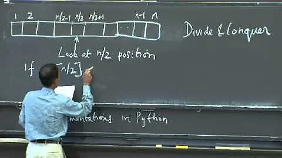
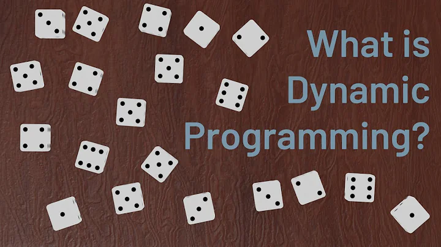
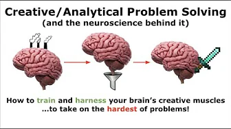
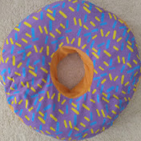

Talking Tech and AI with Google CEO Sundar Pichai!
3.4M views · 6 months ago


Try Not To Laugh Challenge #9
19M views · 4 years ago
How Binary Works, and the Power of Abstraction
191k views · 1 month ago

Lecture 1: Algorithmic Thinking, Peak Finding
5M views · 10 years ago


How to Count Dice Rolls - An Introduction to Dynamic Programming
125k views · 2 years


How to Awaken & Enhance Your Analytical Problem-Solving Mind
40k views · 2 months ago